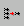

The pins of the symbol that you create for a unit represent the interface of the unit. The following sections describe various issues related to the definition of these pins. For graphic manipulation of symbol pins (rotating, flipping) see “Rotating Pins and Pin Names” and “Flipping Pins”.
Whenever the unit interface is redefined (by the addition, modification, and/or deletion of ports), you can automatically update the symbol(s) created for the unit.
A message box opens, detailing how the symbol is updated. It indicates which pins are added, which are modified, and which are deleted in the symbol.
In Vista Block Diagram, SystemC Hierarchical Channels design units get a special color (light green) and a special pin called the Interface Pin. This pin allows different modules to bind to this hierarchical channel through the interface pin.
Although it is possible to bind multiple units to the interface pin, Vista allows splitting (and merging) the interface pin.
To split/merge the interface pin, do the following:
Alternatively, selecting multiple interface pins and clicking the Merge Pins  icon will merge pins to one interface pin with a default name.
As you create a symbol to represent a unit, you can configure how much information is displayed for each of the symbol pins. The specifications can be made globally for all pins in the same symbol, and for individual pins.
To configure the information displayed for all pins in a given symbol:
To specify the information displayed for an individual pin: